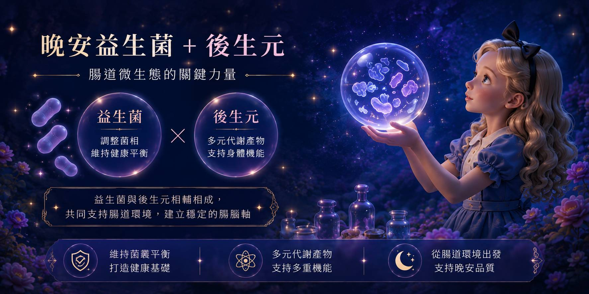
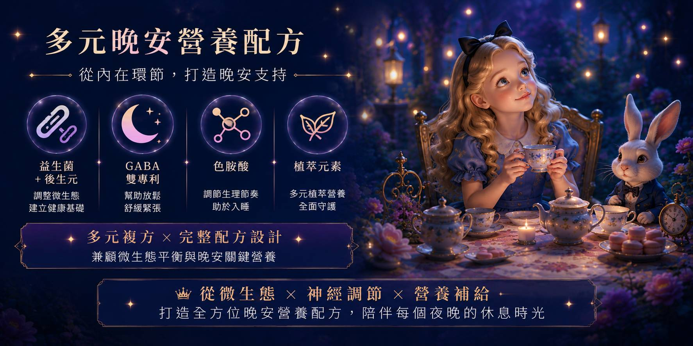
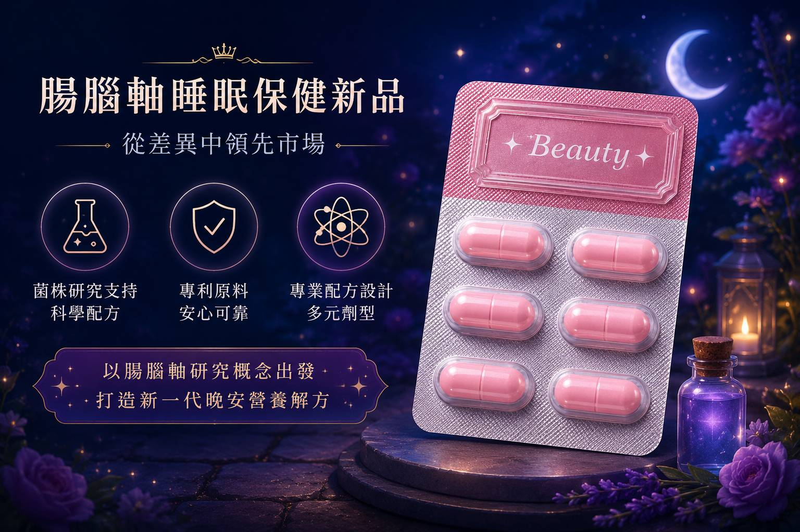

💡 睡眠保健不只有GABA！解析腸腦軸、益生菌、後生元與晚安營養的最新配方思維。
現代人的生活節奏越來越快，工作壓力、作息不規律、睡前長時間使用3C產品，都可能讓「今晚能不能好好休息」成為許多人每天關心的課題。因此，睡眠保健市場也逐漸從過去常見的單一營養素補充，朝向更多元的營養設計發展。其中，一個近年受到營養與微生態研究關注的關鍵字，就是——「腸腦軸（Gut-Brain Axis）」
腸道與大腦之間究竟有什麼關係？
為什麼「益生菌」開始出現在晚安營養配方中？
01｜腸腦軸是什麼？腸道與大腦其實一直在「雙向溝通」
腸道與中樞神經系統之間複雜的雙向溝通網絡
「腸腦軸」並不是指一個單獨的器官，而是用來描述腸道與中樞神經系統之間複雜的雙向溝通網絡。這套系統涉及神經、免疫、內分泌以及腸道微生物等多個環節。
也就是說，我們現在談「腸道健康」，已經不只是消化與排便議題。科學研究持續探索：
腸道微生態 ↔ 腸腦軸 ↔ 情緒與壓力反應 ↔ 睡眠
彼此之間可能存在的關聯，這也讓「腸道微生態」逐漸成為新一代晚安營養研究的重要方向之一。
02｜為什麼「腸道微生態」開始受到睡眠研究關注？
從單一成分，走向更完整的生活與微生態概念
人體腸道中存在大量微生物，形成複雜的「腸道微生態」。不同菌群及其代謝產物，可能透過多種途徑參與腸腦之間的訊息傳遞，因此近年有越來越多研究開始探討腸道菌相與睡眠之間的雙向關聯。
一方面，生活作息、飲食與睡眠狀態可能影響腸道微生態；另一方面，研究也持續探索腸道微生物及其代謝產物與神經、免疫及內分泌訊號之間的關係。
睡眠營養的思考，開始從單一成分延伸到多元微生態概念。
03｜晚安益生菌是什麼？
以腸腦軸研究為基礎的特定益生菌配方
一般人聽到益生菌，第一個想到的可能是「幫助維持消化道機能」。但隨著菌株研究越來越細分，益生菌市場也開始走向「菌株精準化」。
不同菌株具有不同的研究背景與特性，因此在產品開發上，不能只看「有沒有益生菌」，更應該進一步了解菌株來源、菌株編號、研究資料、添加量及配方設計。

所謂「晚安益生菌」，可以理解為以腸道微生態與腸腦軸研究概念為基礎，應用於晚安營養產品設計的特定益生菌配方，在產品定位與配方策略上與一般消化道益生菌有所不同。
04｜益生菌之外，「後生元」也成為配方新角色

益生菌、益生元與後生元的多元應用
除了益生菌（Probiotics），近年另一個熱門關鍵字就是後生元（Postbiotics）。這三者概念各有不同：
- 🔹 益生菌 Probiotics
經適量攝取後，能對宿主產生健康效益的活微生物。 - 🔹 益生元 Prebiotics
可被宿主微生物選擇性利用，並帶來健康效益的基質。 - 🔹 後生元 Postbiotics
由失活微生物及／或其組成成分所形成、能為宿主帶來健康效益的製劑。
05｜睡眠保健只能做GABA嗎？
從單一幫助入睡成分，走向腸腦軸晚安營養複方
GABA（γ-胺基丁酸）是目前晚安營養產品中相當常見的成分之一。但從新品開發角度來看，如果市場上的產品都採用相似成分，品牌就必須思考如何創造差異化。
晚安益生菌 ＋ 後生元
✖
GABA ✖ 色胺酸 ✖ 多元植萃營養

將「腸道微生態」與傳統晚安營養成分結合，形成更完整的複方產品故事。
06｜想開發晚安益生菌？從「菌株選擇」開始
品牌規劃睡眠保健新品的 5 大評估方向
- ① 產品TA是誰？：上班族、熟齡族、女性族群或高壓生活族群，產品溝通策略都可能不同。
- ② 益生菌是否具有明確菌株資料？：不能只比較「幾百億菌」，菌株來源與相關研究同樣重要。
- ③ 是否需要搭配後生元？：可依產品定位與配方架構評估。
- ④ 是否加入GABA、色胺酸或植萃？：透過複方設計建立產品差異。
- ⑤ 劑型如何選擇？：膠囊、粉包或其他形式，都會影響產品體驗、成本與市場定位。
🤝 睡眠益生菌 OEM／ODM 開發
腸腦軸，正在打開睡眠保健的另一種可能
從過去的單一營養補充，到現在的微生態研究，睡眠保健產品正在出現更多新的開發思維。如果您正在規劃晚安益生菌、睡眠保健品、GABA複方、後生元產品或腸腦軸概念新品，歡迎與百達醫團隊聯繫。
原料評估 ➔ 配方設計 ➔ 劑型規劃 ➔ 法規檢視 ➔ OEM／ODM量產
從市場概念到產品落地，一起規劃下一支晚安營養新品。
BKE 百達醫企業 | OEM / ODM 一站式保健食品代工